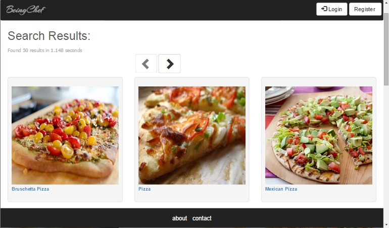
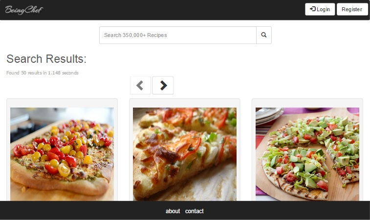
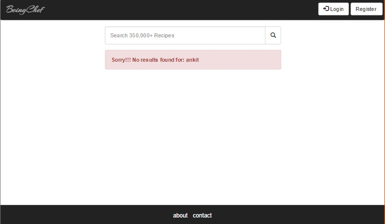

-
Searching for recipes will navigate the user to the page shown below. The search string is 'pizza'.
The food item recipes are fetched from the BigOven API (api.bigoven.com). Following features
are visible on the page:
- Number of results fetched
- Time taken to fetch the results
- The page displays 10 results per page with a facility to navigate to other search results
- The user can view the dish name and an image of the dish on this page. Details about the
food item can be viewed by clicking on the dish name link.
-
The user can also search more recipes from this page too instead of navigating back to
the home page.
-
If the dish text did not return any results, the user is shown an appropriate error
message.

-
Additional Search Bar:

-
Results not found error message:
